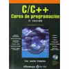

Codigos de programacion
Codigos Fuentes, los ejecutables se encuentra dentro del paquete correspondiente (Archivo subido a Megaupload)
- Codigos de C
- Codigos de C++
- Codigos de Java
- Codigos de C# (En proceso)
- Codigos de HTML
- Codigos de CSS
- Codigos de PHP 5
Codigos de C
Aclaracion todos estos codigos fueron echos para version Windows por lo que si quieres ocuparlos para linux tendras que hacer algunas modificaciones.Fueron calados en dev-c++ version 4.99
Todos los codigos, junto con Devc++ y otros codigos de analisis numericos los puedes descargar de:Aquí
Estos codigos son ejemplos simbolicos es decir, son ejemplos donde se ve claramente como usar algunas funciones de C y sentencias de control
- Mi primer programa
- Uso de: enum
- Uso de: Tipos de datos primitivos
- Uso de: Formato de impresion
- Uso de: Operaciones con enteros
- Uso de: Operaciones con enteros 2
- Uso de: Mi primer funcion
- Uso de: Putchar y getchar
- Uso de: Char
- Uso de: Char 2
- Uso de: Switch
- Uso de: Typedef
- Uso de: bloques de memoria
- Uso de: if Uso de: estructuras
- Uso de apuntadores
- Uso de: calloc
- Uso de: cast
- Uso de: Mealloc
- Uso de: Realloc
- Uso de: Punteros a Funciones
- Uso de: Memoria dinamica y funciones
- Uso de: Pilas con Arreglos
- Uso de: Arreglos Paralelos
- Uso de: Arreglos de 5 dimensiones
- Uso de: Pilas con operaciones basica
- Uso de: Linea de Ordenes
- Uso de: GETENV
- Uso de: INSTRUCCIONES BAT EN C
- Uso de: Colores de la terminal
- Uso de: Archivos en C
Estos codigos son problemas resueltos que estan en libros y son de tarea en algunas materias. Se resolvieron usando C y con los elementos basicos de este lenguaje.
- Volumen con esfera
- Evaluando un polinomio
- Conversion de grados Celsius y Fahrenheit
- Edad de alguien
- Raiz cuadrada metodo de newton
- Raiz de 2do grado
- Calculo de exponencial
- Calculadora
- Sumatoria
- Numero de Tarot
- Triangulo de pascal
- Frecuencia de letras en un texto
- De minusculas a mayusculas sin funciones predefinidas
- Cuenta caracteres, palabras y lineas de un texto
- Strings o arreglos char
- Operaciones con estructuras
- Aplicacion de estructuras
- Valor minimo y maximo de una lista o arreglo
- Tabla de frecuencias
- Numeros complejos con estructuras operaciones elementales
- Ordenar cadenas char. Metodo Burbuja mejorado
- Operaciones con bits
- Matriz dinamica de 2 dimensiones
- Recursividad: Suma de cuadrados
- Memoria Dinamica y funciones
- Reducir Triangular Superior
- Ordenar Matrices Alfabeticamente
- Dias de la Semana
- Validaciones Tipo de dato
- Listas Multiples
- Numeros a Letras
- POSFIJA A INFIJA
- Calculo del numero menor
- ASCII
- Numero a cadena
- Numeros Romanos
- Calendario
- Factorial hasta 20
- Hipotenusas de los Triangulos
- Archivos_1
- Archivos_2
- Decimal a octal
- Calculo de PI
- Promedios de N numeros
- Imprime Rombos
- Imprime triangulos
- Interpolacion de Lagrange
- Diferencias dividias Newton Interpolacion
- Decimal a Binario
- Binario a Decimal
- Truncamiento en Sumatorias
- Metodo de la Bisseccion A
- Metodo de la Bisseccion B
- Metodo de la Bisseccion C
- Metodo de la Bisseccion D
- Falsa Posicion
- Raices de ecuaciones metodos Newton A
- Raices de ecuaciones metodos Newton B
- Raices de ecuaciones metodos Newton C
- Raices de ecuaciones metodos Newton D
- Raices de ecuaciones metodos Secante A
- Raices de ecuaciones metodos Secante B
- Raices de ecuaciones metodos Secante C
- Raices de ecuaciones metodos Secante D
- Determinante de Gauss Jordan
- Gauss Jordan
- Inversa Gauss Jordan
- Metodo de Jacobi
- Cronometro
- Linea Telefonica
- Mi primer Virus
- Aplicacion Arreglos booleanos y Graficacion
Codigos de C++
Codigos de C++
Creados y calados con Borland c++ version 32 bits
- Uso de cin cout (Dev c++)
- Uso composicion (Dev c++)
- Uso de Operador de alcance (Dev c++)
- Uso de Parametros por Omision (Dev c++)
- Uso de Parametros por referencia (Dev c++)
- Uso de Sobrecarga de Operadores (Dev c++)
- Varios ejercicios de clases y sobrecarga de Operadores
- Ejercicios de Metodos Numericos 2
- Clase abstracta
- Clase amiga
- Clase Pila
- Templete
- Clase circulo
- Clase Elipse
- Clase Linea
- Clase Pico
- Clase Rectangulo
- Clase Pollo 1
- Clase Pollo 2
Descarga el pack de c++ que contiene:
-Ejemplos simbolicos de sintaxis de c++
-Graficacion basica en Borland c++
-Codigos de Metodos Numericos
-Una practica completa con varias clases
-El compilador Borland c++
Aquí
Codigos de JAVA
Codigos de Java
- Hola mundo Java
- Aplicacion 1
- Entrada del teclado
- Uso de if
- Uso de Archivos
- Uso de Clase Abrastracta
- Uso de Herencia
- Uso de Paketes
- Uso de Polimorfismo
- Swing Calculadora
- Swing Promedio
- Swing Mi primero
- Swing Con botones
- Applet 1ero
- Applet Acertijo
- Applet Areas
- Applet Caja de Texto
- Applet Caja de Texto 2
- Applet Cuenta Cliks
- Applet Grupo de Botones de radio
- Applet Matriz
- Applet Pizza
- Clase Ecuaciones 2do grado
- Clase Figuras
- Clase Factorial
- Clase Fibanocci
- Clase Matriz
- Clase Persona
- Clase Zoologico
Todos los codigos de java los puedes descargar de Aquí
El jdk para windows (xp, vista, 7) junto con las instrucciones para el linker los puedes bajar de Aquí
El jdk para Ubuntu con las instrucciones de instalacion lo puedes bajar de: Aquí
Codigos de HTML
Codigos de HTML.
Espero subir dentro de algun tiempo mas codigos!!!
Proyectos destacados
- Codigos del reloj(Qbasic-2008)
- Codigos de los Fractales(Qbasic-2008)
- Descargar el programa Qbasic
- Codigo del Humano(Borland c++ - 2010)
- Codigos de circulos flotantes(Borland c++-2010)
Manuales programacion
|  | ||

|
||

|

|